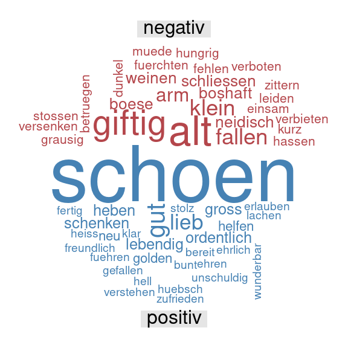

MäRchen: Text Mining mit den sieben Zwergen
Kursbeschreibung
Beschreibung
Es war einmal vor langer Zeit, da war die Linguistik eine historisch-vergleichende Geisteswissenschaft, suchte gewissenhaft nach der Herkunft einer Sprache und schrieb dicke Bücher über ihre Regeln. Das war einmal. Die moderne Linguistik ist vielseitig und Teil einer Familie von Wissenschaften, die ihre Forschungsfragen mit Hilfe von Daten und Computern beantworten. Dabei nutzt sie Methoden, die nicht auf akademische Forschung beschränkt sind, sondern die auch in Industrie und Handel zum Einsatz kommen.
In diesem Kurs lernen Sie neue Methoden der Datenanalyse an einem alten Beispiel kennen: Märchen. Märchen sind gute Beispiele für Erzähltexte (narrative Texte), ihre Analyse bringt Einsicht in das Weltbild und die Bilderwelt einer Sprachgemeinschaft. Sie sind außerdem auch für Deutsch-als-Fremdsprache-Studierende ab A2/B1-Niveau schon verständlich. Im Kurs lesen wir deutschsprachige Märchen der Brüder Grimm und chinesische und arabische Volksmärchen in deutscher Übersetzung. Wir analysieren anschließend verschiedene Aspekte zuerst von Hand und dann mit dem Computer. Die Ergebnisse der Analysen werden von den Teilnehmenden interpretiert und vorgestellt.
Die Unterrichtssprache ist Deutsch. Sie benötigen einen Laptop und Internet.
Ihre Note besteht aus Ihrer Anwesenheit (20%), der Entwicklung und dem Vortrag eines eigenen kleinen Projekts (40%) und einer Take-Home-Prüfung (40%).
Lernziele
In diesem Kurs lernen oder üben Sie …
deutsche und chinesische und arabische Volksmärchen in deutscher Übersetzung zu lesen.
in Märchen tradierte kulturspezifische Bilderwelten und Narrative zu erkennen und wiederzugeben.
…
sprachliche Daten in computerlesbare Daten umzuwandeln.
Daten quantitativ zu analysieren und sachbezogen zu interpretieren.
Plan
| Einheit | Thema |
|---|---|
| 1 | Einführung: Was Korpus, R und Text Mining sind und was das Ganze eigentlich soll |
| 2 | Das Korpus kennenlernen: Gemeinsam Märchen lesen und verstehen |
| 3 | Das Korpus kennenlernen: Gemeinsam Märchen lesen und verstehen |
| 4 | R: Erste Schritte mit R |
| 5 | Eins, zwei, drei, vier, fünf…: Tokenisierung und Wort-Häufigkeiten |
| 6 | Eins, zwei, drei, vier, fünf…: Tokenisierung und Wort-Häufigkeiten |
| 7 | Gut und Böse, Liebe und Hass: Stimmungsanalyse (sentiment analysis) |
| 8 | Gut und Böse, Liebe und Hass: Stimmungsanalyse (sentiment analysis) |
| 9 | Das ist doch eh alles dasselbe, oder?: Ähnlichkeitsanalyse (cosine similarity) |
| 10 | Das ist doch eh alles dasselbe, oder?: Ähnlichkeitsanalyse (cosine similarity) |
| 11 | Weiber, Wölfe, Wälder: Themenanalyse (topic modeling) |
| 12 | Weiber, Wölfe, Wälder: Themenanalyse (topic modeling) |
| 13 | Märchen qualitativ analysieren… |
| 14 | Märchen qualitativ analysieren… |
| 15 | …und quantitativ auswerten. |
| 16 | …und quantitativ auswerten. |
| 17 | Take-Home-Prüfung |
(90 Minuten / Einheit)